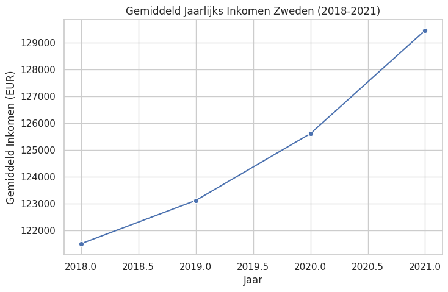
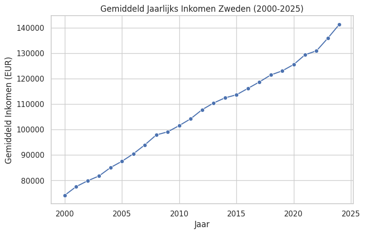
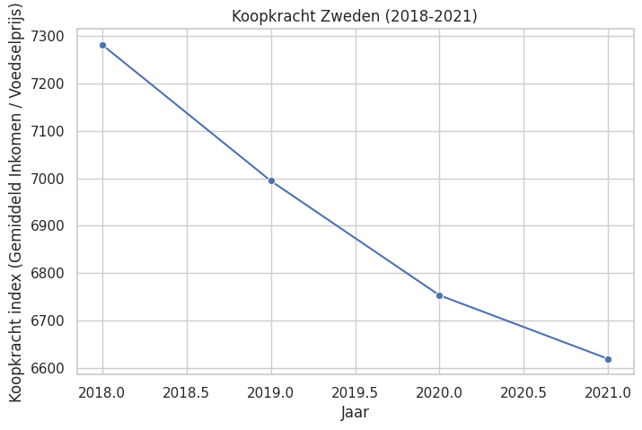
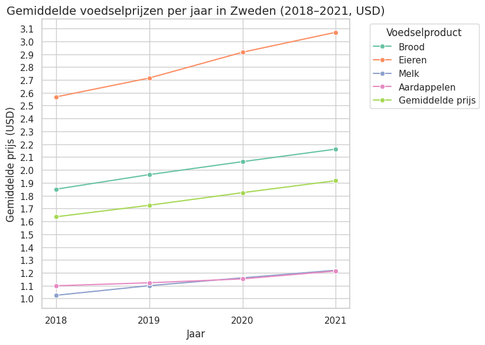
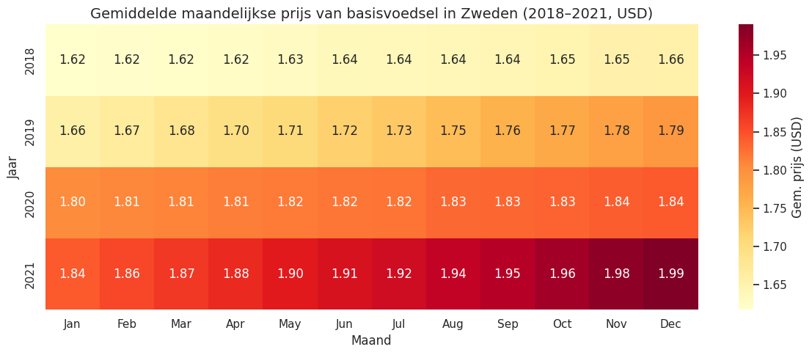

Main Visualisation Notebook#
Dit is het hoofd notebook
import plotly.graph_objs as go
import plotly.express as px
import pandas as pd
from plotly.offline import init_notebook_mode
init_notebook_mode(connected=True)
df_food_prices = pd.read_csv('dataset_sources/Food_Prices.csv')
df_food_prices_sweden = df_food_prices[df_food_prices['Country '] == 'Sweden'].drop('Country ', axis=1)
df_food_prices_sweden.to_csv('filtered/Food_Prices_Sweden.csv', index=False)
df_food_prices_sweden = pd.read_csv('filtered/Food_Prices_Sweden.csv')
df_food_prices_sweden_years = df_food_prices_sweden[df_food_prices_sweden['Year '] <= 2021]
df_food_prices_sweden_years.to_csv('filtered/Food_Prices_Sweden_2018-2021.csv', index=False)
df_food_prices_sweden_years = pd.read_csv('filtered/Food_Prices_Sweden_2018-2021.csv')
# df_food_prices_sweden_years.info()
# df_food_prices_sweden.describe()
df_food_prices_sweden_years.head(n=5)
| Year | Month | Food Item | Unit of Measurement | Average Price | Currency | Price in USD | Availability | Quality | |
|---|---|---|---|---|---|---|---|---|---|
| 0 | 2018 | 1 | Bread | Loaf | 18.61 | Kr | 1.82 | 1 | High |
| 1 | 2018 | 2 | Bread | Loaf | 18.66 | Kr | 1.83 | 1 | High |
| 2 | 2018 | 3 | Bread | Loaf | 18.71 | Kr | 1.83 | 1 | High |
| 3 | 2018 | 4 | Bread | Loaf | 18.76 | Kr | 1.84 | 1 | High |
| 4 | 2018 | 5 | Bread | Loaf | 18.81 | Kr | 1.84 | 1 | High |
df_wdi_indicators = pd.read_csv('dataset_sources/WDI_Indicators_MainData.csv')
df_wdi_indicators_sweden = df_wdi_indicators[df_wdi_indicators['Country Name'] == 'Sweden'].drop('Country Name', axis=1).drop('Country Code', axis=1)
df_wdi_indicators_sweden.to_csv("filtered/WDI_Indicators_Sweden.csv", index=False)
df_wdi_indicators_sweden = pd.read_csv('filtered/WDI_Indicators_Sweden.csv')
df_wdi_indicators_sweden_years = df_wdi_indicators_sweden[df_wdi_indicators_sweden['Time'] >= 2018]
df_wdi_indicators_sweden_years.to_csv('filtered/WDI_Indicators_Sweden_2018-2021.csv', index=False)
df_wdi_indicators_sweden_years = pd.read_csv('filtered/WDI_Indicators_Sweden_2018-2021.csv')
# df_wdi_indicators_sweden_years.info()
# df_wdi_indicators_sweden.describe()
df_wdi_indicators_sweden_years.head(n=5)
| Time | Time Code | Current education expenditure, primary (% of total expenditure in primary public institutions) [SE.XPD.CPRM.ZS] | Current education expenditure, secondary (% of total expenditure in secondary public institutions) [SE.XPD.CSEC.ZS] | Current education expenditure, tertiary (% of total expenditure in tertiary public institutions) [SE.XPD.CTER.ZS] | Current education expenditure, total (% of total expenditure in public institutions) [SE.XPD.CTOT.ZS] | Current health expenditure (% of GDP) [SH.XPD.CHEX.GD.ZS] | Domestic general government health expenditure (% of GDP) [SH.XPD.GHED.GD.ZS] | Educational attainment, at least Bachelor's or equivalent, population 25+, female (%) (cumulative) [SE.TER.CUAT.BA.FE.ZS] | Educational attainment, at least Bachelor's or equivalent, population 25+, male (%) (cumulative) [SE.TER.CUAT.BA.MA.ZS] | ... | Unemployment, total (% of total labor force) (modeled ILO estimate) [SL.UEM.TOTL.ZS] | Unemployment, youth female (% of female labor force ages 15-24) (modeled ILO estimate) [SL.UEM.1524.FE.ZS] | Unemployment, youth male (% of male labor force ages 15-24) (modeled ILO estimate) [SL.UEM.1524.MA.ZS] | Unemployment, youth total (% of total labor force ages 15-24) (modeled ILO estimate) [SL.UEM.1524.ZS] | Vulnerable employment, female (% of female employment) (modeled ILO estimate) [SL.EMP.VULN.FE.ZS] | Vulnerable employment, male (% of male employment) (modeled ILO estimate) [SL.EMP.VULN.MA.ZS] | Vulnerable employment, total (% of total employment) (modeled ILO estimate) [SL.EMP.VULN.ZS] | Wage and salaried workers, female (% of female employment) (modeled ILO estimate) [SL.EMP.WORK.FE.ZS] | Wage and salaried workers, male (% of male employment) (modeled ILO estimate) [SL.EMP.WORK.MA.ZS] | Wage and salaried workers, total (% of total employment) (modeled ILO estimate) [SL.EMP.WORK.ZS] | |
|---|---|---|---|---|---|---|---|---|---|---|---|---|---|---|---|---|---|---|---|---|---|
| 0 | 2018 | YR2018 | 95.676880 | 95.153908 | 96.261658 | 94.817253 | 10.94 | 9.28 | 36.323666 | 25.779167 | ... | 6.365 | 16.244 | 18.511 | 17.400 | 4.190536 | 8.707876 | 6.559247 | 94.250259 | 86.681399 | 90.281487 |
| 1 | 2019 | YR2019 | 95.300537 | 94.945000 | 96.213333 | 95.402473 | 10.83 | 9.22 | 29.040001 | 21.049999 | ... | 6.833 | 19.654 | 20.511 | 20.094 | 4.313352 | 8.774362 | 6.661061 | 94.096348 | 86.598222 | 90.150267 |
| 2 | 2020 | YR2020 | 95.185387 | 94.972870 | 96.202148 | 95.371567 | 11.33 | 9.77 | 38.214672 | 27.006084 | ... | 8.291 | 22.734 | 24.942 | 23.895 | 4.359539 | 8.909383 | 6.763949 | 94.151037 | 86.440356 | 90.076253 |
| 3 | 2021 | YR2021 | 92.513046 | 93.643578 | 96.319321 | 94.238380 | 11.25 | 9.66 | 37.849453 | 27.506386 | ... | 8.722 | 24.040 | 25.122 | 24.599 | 4.748236 | 9.305429 | 7.160826 | 93.644305 | 85.816367 | 89.500224 |
4 rows × 93 columns
df_annual_net_earnings = pd.read_csv('dataset_sources/estat_earn_nt_net_en.csv')
df_annual_net_earnings_sweden = df_annual_net_earnings[df_annual_net_earnings['geo'] == 'Sweden'].drop('geo', axis=1)
df_annual_net_earnings_sweden.to_csv('filtered/Annual_Net_Earnings_Sweden.csv', index=False)
df_annual_net_earnings_sweden = pd.read_csv('filtered/Annual_Net_Earnings_Sweden.csv')
df_annual_net_earnings_sweden_years = df_annual_net_earnings_sweden[(df_annual_net_earnings_sweden['TIME_PERIOD'] >= 2018) & (df_annual_net_earnings_sweden['TIME_PERIOD'] <= 2021)]
df_annual_net_earnings_sweden_years.to_csv('filtered/Annual_Net_Earnings_Sweden_2018-2021.csv', index=False)
df_annual_net_earnings_sweden_years = pd.read_csv('filtered/Annual_Net_Earnings_Sweden_2018-2021.csv')
# df_annual_net_earnings_sweden_years.info()
# df_annual_net_earnings_sweden_years.describe()
df_annual_net_earnings_sweden_years.head(n=5)
| DATAFLOW | LAST UPDATE | freq | currency | estruct | ecase | TIME_PERIOD | OBS_VALUE | OBS_FLAG | CONF_STATUS | |
|---|---|---|---|---|---|---|---|---|---|---|
| 0 | ESTAT:EARN_NT_NET(1.0) | 29/04/25 23:00:00 | Annual | Euro | Family allowances | One-earner couple with two children earning 10... | 2018 | 3021.94 | NaN | NaN |
| 1 | ESTAT:EARN_NT_NET(1.0) | 29/04/25 23:00:00 | Annual | Euro | Family allowances | One-earner couple with two children earning 10... | 2019 | 3003.09 | NaN | NaN |
| 2 | ESTAT:EARN_NT_NET(1.0) | 29/04/25 23:00:00 | Annual | Euro | Family allowances | One-earner couple with two children earning 10... | 2020 | 3032.96 | NaN | NaN |
| 3 | ESTAT:EARN_NT_NET(1.0) | 29/04/25 23:00:00 | Annual | Euro | Family allowances | One-earner couple with two children earning 10... | 2021 | 3134.09 | NaN | NaN |
| 4 | ESTAT:EARN_NT_NET(1.0) | 29/04/25 23:00:00 | Annual | Euro | Family allowances | Two-earner couple with two children, both earn... | 2018 | 3021.94 | NaN | NaN |
Options visualisation#
Multibar chart showing net income through the years for a view categories
Distribution income sources donut chart maybe
Food Prices per product or per category aka essential (bread) and luxury food
Line chart comparing income and food prices need more
Gebruik Lecture 4-4 pagina 11 om te kijken wat voor plot het beste past.
import pandas as pd
import numpy as np
import matplotlib.pyplot as plt
import seaborn as sns
import calendar
sns.set(style="whitegrid")
income = pd.read_csv('filtered/Annual_Net_Earnings_Sweden_2018-2021.csv')
income_sweden = income[(income['TIME_PERIOD'] >= 2018) & (income['TIME_PERIOD'] <= 2021)]
avg_income = income_sweden.groupby('TIME_PERIOD')['OBS_VALUE'].mean().reset_index()
plt.figure(figsize=(8,5))
sns.lineplot(data=avg_income, x='TIME_PERIOD', y='OBS_VALUE', marker='o')
plt.title('Gemiddeld Jaarlijks Inkomen Zweden (2018-2021)')
plt.xlabel('Jaar')
plt.ylabel('Gemiddeld Inkomen (EUR)')
plt.show()

sns.set(style="whitegrid")
income = pd.read_csv('filtered/Annual_Net_Earnings_Sweden.csv')
avg_income = income.groupby('TIME_PERIOD')['OBS_VALUE'].mean().reset_index()
plt.figure(figsize=(8,5))
sns.lineplot(data=avg_income, x='TIME_PERIOD', y='OBS_VALUE', marker='o')
plt.title('Gemiddeld Jaarlijks Inkomen Zweden (2000-2025)')
plt.xlabel('Jaar')
plt.ylabel('Gemiddeld Inkomen (EUR)')
plt.show()

food = pd.read_csv('filtered/Food_Prices_Sweden_2018-2021.csv')
food.columns = food.columns.str.strip()
food_sweden = food[(food['Year'] >= 2018) & (food['Year'] <= 2021)]
avg_food_price = food_sweden.groupby('Year')['Average Price'].mean().reset_index()
avg_income['TIME_PERIOD'] = avg_income['TIME_PERIOD'].astype(int)
avg_food_price['Year'] = avg_food_price['Year'].astype(int)
combined = pd.merge(avg_income, avg_food_price, left_on='TIME_PERIOD', right_on='Year', how='inner')
print('Combined shape:', combined.shape)
print(combined)
if not combined.empty:
plt.figure(figsize=(8,5))
sns.scatterplot(data=combined, x='OBS_VALUE', y='Average Price')
sns.regplot(data=combined, x='OBS_VALUE', y='Average Price', scatter=False, color='red')
plt.title('Relatie Gemiddeld Inkomen & Voedselprijs Zweden (2018-2021)')
plt.xlabel('Gemiddeld Inkomen (EUR)')
plt.ylabel('Gemiddelde Voedselprijs')
plt.show()
else:
print('Error: Geen data na merge, controleer je filters en kolomnamen.')
Combined shape: (4, 4)
TIME_PERIOD OBS_VALUE Year Average Price
0 2018 121509.519701 2018 16.686042
1 2019 123120.298761 2019 17.602500
2 2020 125612.739872 2020 18.601458
3 2021 129461.803248 2021 19.560417
wdi = pd.read_csv('filtered/WDI_Indicators_Sweden.csv')
wdi.columns = wdi.columns.str.strip()
combined = pd.merge(avg_income, avg_food_price, left_on='TIME_PERIOD', right_on='Year', how='inner')
combined['Koopkracht'] = combined['OBS_VALUE'] / combined['Average Price']
plt.figure(figsize=(8,5))
sns.lineplot(data=combined, x='TIME_PERIOD', y='Koopkracht', marker='o')
plt.title('Koopkracht Zweden (2018-2021)')
plt.xlabel('Jaar')
plt.ylabel('Koopkracht index (Gemiddeld Inkomen / Voedselprijs)')
plt.grid(True)
plt.show()

df = pd.read_csv('filtered/Food_Prices_Sweden_2018-2021.csv')
df.columns = df.columns.str.strip()
df['Price in USD'] = pd.to_numeric(df['Price in USD'], errors='coerce')
df['Food Item'] = df['Food Item'].str.strip()
gekozen_producten = ['Bread', 'Potatoes', 'Milk', 'Eggs']
df_selectie = df[df['Food Item'].isin(gekozen_producten)]
per_product = df_selectie.groupby(['Year', 'Food Item'])['Price in USD'].mean().reset_index()
gemiddeld = df_selectie.groupby('Year')['Price in USD'].mean().reset_index()
gemiddeld['Food Item'] = 'Gemiddelde prijs'
alles = pd.concat([per_product, gemiddeld], ignore_index=True)
alles['Year'] = alles['Year'].astype(int)
vertaling = {
'Bread': 'Brood',
'Potatoes': 'Aardappelen',
'Milk': 'Melk',
'Eggs': 'Eieren',
'Gemiddelde prijs': 'Gemiddelde prijs'
}
alles['Voedselproduct'] = alles['Food Item'].map(vertaling)
plt.figure(figsize=(10, 6))
ax = sns.lineplot(data=alles, x='Year', y='Price in USD',
hue='Voedselproduct', marker='o', palette='Set2')
ax.set_xticks([2018, 2019, 2020, 2021])
y_min = np.floor(alles['Price in USD'].min() * 10) / 10
y_max = np.ceil(alles['Price in USD'].max() * 10) / 10
yticks = np.arange(y_min, y_max + 0.1, 0.1)
ax.set_yticks(yticks)
plt.title('Gemiddelde voedselprijzen per jaar in Zweden (2018–2021, USD)', fontsize=14)
plt.xlabel('Jaar')
plt.ylabel('Gemiddelde prijs (USD)')
plt.legend(title='Voedselproduct', bbox_to_anchor=(1.05, 1), loc='upper left')
plt.grid(True)
plt.tight_layout(rect=[0, 0, 0.85, 1])
plt.show()

df = pd.read_csv('filtered/Food_Prices_Sweden_2018-2021.csv')
df.columns = df.columns.str.strip()
df = df[df['Year'].between(2018, 2021)]
producten = ['Bread', 'Potatoes', 'Milk', 'Eggs']
df = df[df['Food Item'].isin(producten)]
df['Price in USD'] = pd.to_numeric(df['Price in USD'], errors='coerce')
df['MonthName'] = df['Month'].apply(lambda x: calendar.month_abbr[int(x)])
gemiddelde_prijs = df.groupby(['Year', 'MonthName'])['Price in USD'].mean().reset_index()
heatmap_data = gemiddelde_prijs.pivot(index='Year', columns='MonthName', values='Price in USD')
maanden_volgorde = [calendar.month_abbr[m] for m in range(1, 13)]
heatmap_data = heatmap_data.reindex(columns=maanden_volgorde)
plt.figure(figsize=(12, 5))
sns.heatmap(heatmap_data, annot=True, fmt=".2f", cmap='YlOrRd', cbar_kws={'label': 'Gem. prijs (USD)'})
plt.title('Gemiddelde maandelijkse prijs van basisvoedsel in Zweden (2018–2021, USD)', fontsize=14)
plt.xlabel('Maand')
plt.ylabel('Jaar')
plt.tight_layout()
plt.show()
